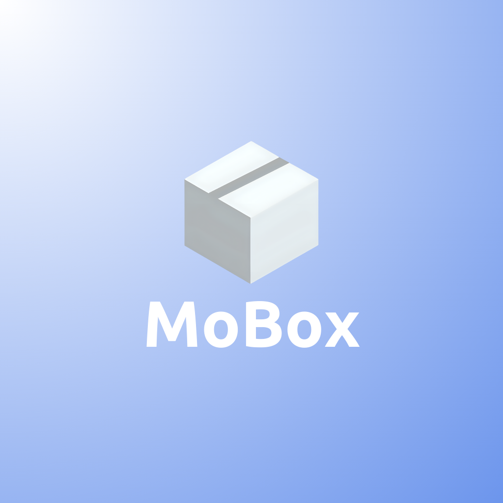
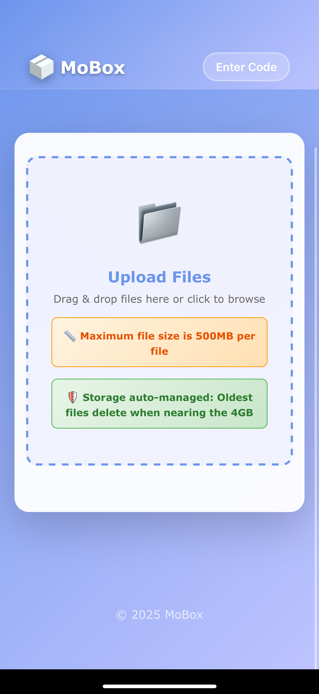
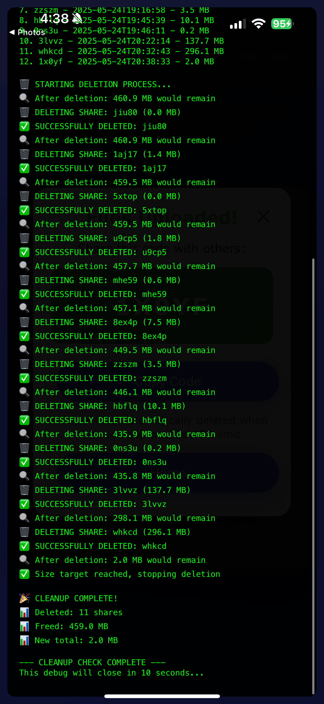

MoBox - File Sharing App
This idea just came to me one day after realizing sharing a ton of images to my friends through iMessage took FOREVER! I know Dropbox exists and love using it, but I thought what would my version look like? What kind of app can I make to help people share their memories with others?

Services & Tools Used:
- Firebase Storage – for storing uploaded files
- Firebase Firestore – for managing metadata like file info, timestamps, and access counts
- Firebase Functions – for backend logic and admin access controls
- Capacitor Plugins – to access iOS/Android device libraries like the photo picker
- Firebase Hosting – for deploying the web version of the app

Features:
- Upload and share files using unique 5-character share codes
- Web and iOS compatibility through Capacitor plugin integration
- Floating message alerts for user feedback (e.g., upload success)
- Hidden admin panel unlocked through multiple logo clicks
- Smart upload handling: switches between parallel and sequential uploads based on file size/count

Admin Panel
This is the admin panel where I can manually delete everything in the cloud just in case. It auto-deletes if it reaches near 4GB total but it's useufll to have a big red button handy.